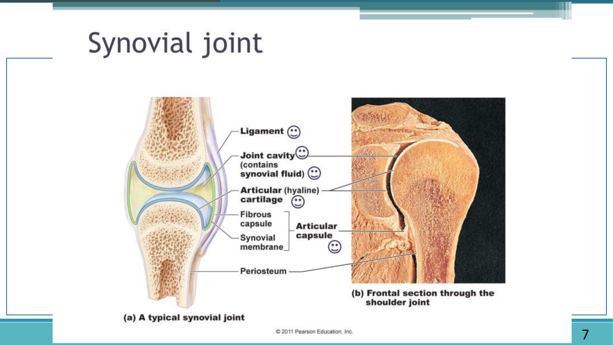
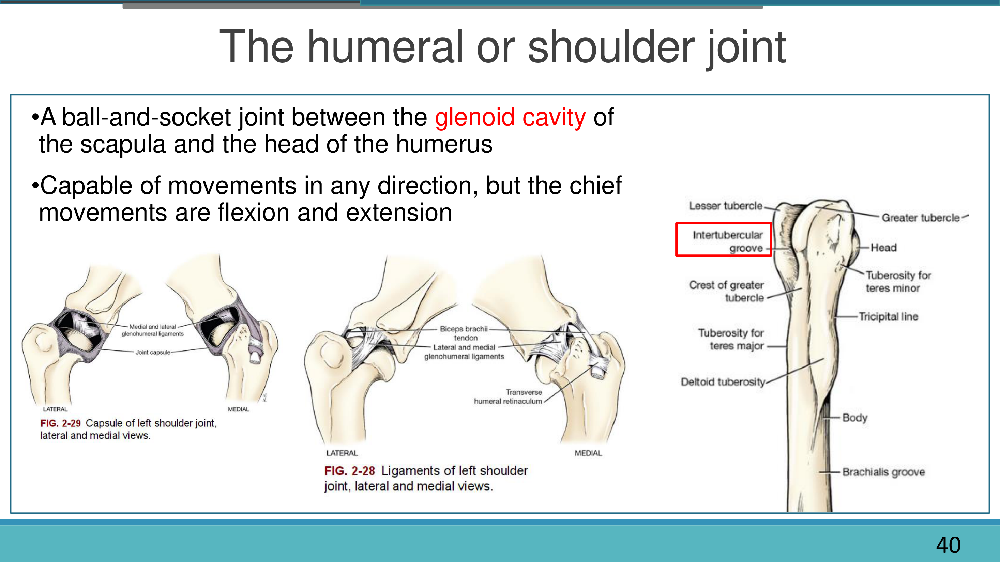
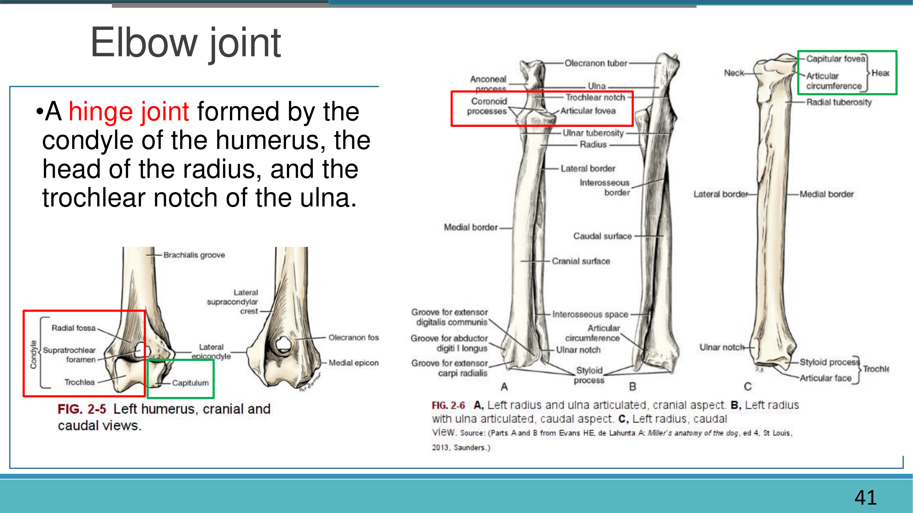
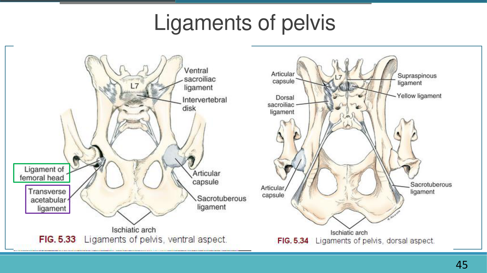
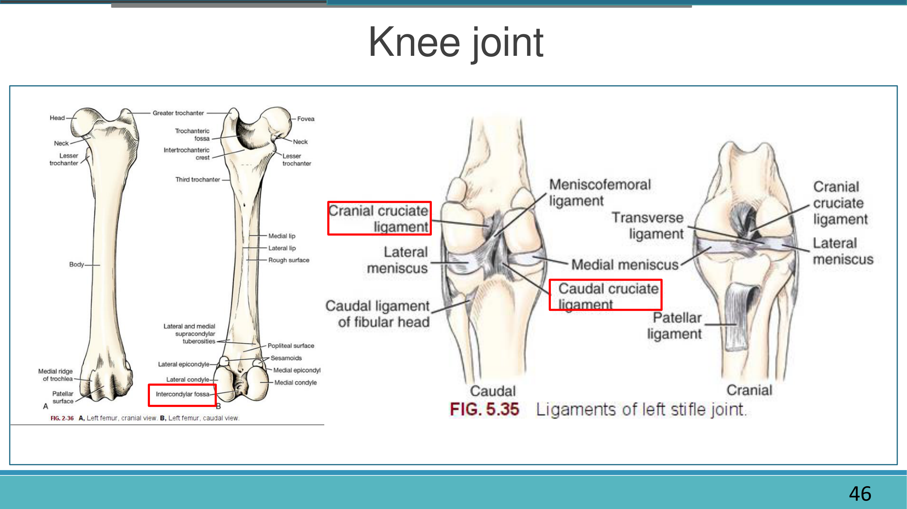

關節總論 Arthrology Overview
關節（joint／articulation）是兩塊或多塊骨頭（或骨與軟骨）之間，由結締組織連接而成的構造，關節學（Arthrology）又稱韌帶學（Syndesmology）。依「結締組織介質種類＋活動度」可分為三大類：纖維關節、軟骨關節、滑液關節；滑液關節在臨床上最重要（跛行、脫臼、退化性關節炎多發生於此），本節先整理三大類的分類與次分類，再細看滑液關節的構造組成。
關節的三大分類（依構造 Structural Classification）
骨與骨之間由緻密結締組織直接相連，無關節腔，多為不動（synarthrosis）或微動關節。
骨與骨之間由軟骨相連，無關節腔，可動性依軟骨種類（透明軟骨／纖維軟骨）而不同。
骨與骨之間具充滿滑液的關節腔，外覆關節囊並由韌帶穩定，是全身活動度最大的關節類型。
纖維關節 Fibrous Joint
| 次分類 | 說明 | 舉例 |
|---|---|---|
| 縫合 Suture | 由縫間韌帶（sutural ligament）連接，主要見於頭骨；依骨緣形狀再分：鋸齒縫合（sutura serrata）、鱗狀縫合（sutura squamosa）、平直縫合（sutura plana／harmonia）、葉狀縫合（sutura foliata，一骨埋入另一骨凹陷以增加穩定性） | 額頂縫合、頂骨與顳骨的鱗狀縫合 |
| 韌帶接合 Syndesmosis | 由白色纖維或彈性纖維組成的韌帶／骨間膜連接，允許些微活動；隨年齡增長介質可能逐漸骨化 | 掌骨體間、肋骨與肋軟骨間；馬老化後橈尺骨、脛腓骨間的骨間膜常見骨化 |
| 嵌合 Gomphosis | 釘狀嵌合，由牙周韌帶（periodontal ligament）固定，嚴格來說並非真正的關節 | 牙齒與齒槽（alveolar socket） |
上述纖維關節多為暫時性構造，隨年齡增長常因骨化作用（ossification）逐漸形成骨性結合（synosteosis），使原本可動或微動的關節變為完全固定。
軟骨關節 Cartilaginous Joint
| 次分類 | 說明 | 舉例 |
|---|---|---|
| 透明軟骨結合 Synchondrosis（Hyaline cartilaginous joint） | 又稱原發性軟骨關節（primary cartilaginous joint），多為暫時性構造，動物成年後軟骨骨化、關節隨之消失 | 長骨的生長板（骨骺板）、肋骨與肋軟骨交界（costochondral junction） |
| 纖維軟骨聯合 Symphysis（Fibrocartilaginous joint） | 又稱次發性軟骨關節、半動關節（amphiarthrosis），成年後仍以纖維軟骨相連，具些微活動度 | 骨盆聯合（symphysis pelvis）、椎體間的椎間盤 |
滑液關節 Synovial Joint（Diarthrosis，真關節）
滑液關節具有關節腔、關節囊、滑液膜與滑液，是全身活動度最大、臨床上最常處理（跛行、脫臼、退化性關節炎）的關節類型，其構造細節如下：

滑液關節的構造組成
| 構造 | 說明 |
|---|---|
| 關節面 Articular surface | 表面平滑；凸面稱關節髁／關節頭（condyle／caput），凹面稱關節盂（glenoid cavity） |
| 關節軟骨 Articular cartilage | 多為透明軟骨，光滑無血管分布，厚薄與所承受壓力／摩擦成正比（凸面較厚、凹面較薄） |
| 關節囊 Articular capsule | 兩層構造：外層為纖維層（fibrous layer／capsular ligament，部分增厚可形成獨立韌帶）；內層為滑液層（synovial layer），分泌滑液並向腔內突出形成皺襞／絨毛（plica／villi） |
| 滑液 Synovial fluid | 淡黃色黏液，由滑液層分泌，功能為潤滑關節面、供應關節軟骨營養 |
| 韌帶 Ligament | 白色帶狀纖維構造，依位置分：內韌帶（intra-／interarticular，位於關節囊纖維層內但不入關節腔）、外圍韌帶（extra-／periarticular）、側韌帶（collateral）、骨間韌帶（interosseous） |
| 關節盤／半月板 Articular disc／meniscus | 纖維軟骨構造，部分或完全分隔關節腔，功能為調和關節面活動、減少摩擦、擴大關節活動性 |
| 關節唇 Labrum glenoidale | 又稱窩緣軟骨（marginal cartilage），纖維軟骨環圈，見於髖臼等深窩關節，功能為加深關節腔、防止腔緣受損 |
| 神經血管分布 | 關節囊血液供應來自鄰近動脈吻合；關節膜富含末端封閉的微血管網路與淋巴管，並有特殊神經末梢司痛覺與自體刺激感應，血管運動神經則負責調控血流 |
滑液關節周邊常伴隨滑液囊（bursa）與腱鞘（tendon sheath，延長包覆肌腱的滑液囊）等附屬構造，作用類似「滾珠軸承」，減少肌腱／韌帶／骨骼間的摩擦；這些構造發炎即為臨床常見的滑囊炎（bursitis）與肌腱炎（tendinitis）。
關節活動度與穩定度通常呈反比：肩關節（球窩關節）最靈活但穩定度較低，依序到髖關節、肘關節、脊椎關節突，至頭骨縫合幾乎完全不動但最穩定——這也是為什麼活動度大的關節（如肩、膝）需要更多韌帶、肌肉與神經回饋來維持穩定。
運動方式與分類 Joint Movement & Classification
滑液關節依「運動方式」與「運動軸心數目」可再細分類型，理解每種關節的形狀與軸心數，能幫助預測其可能的活動方向與活動範圍，也是判讀跛行、動作受限時的基礎。
滑液關節的運動方式
| 分類 | 動作 | 說明 |
|---|---|---|
| 滑動 Gliding movement | Gliding | 一關節面貼著另一關節面滑動，如脊椎關節突之間 |
| 角度運動 Angular movement | 屈曲 Flexion | 關節角度變小 |
| 伸展 Extension | 關節角度變大 | |
| 內收 Adduction | 動點趨向身體中軸 | |
| 外展 Abduction | 動點遠離身體中軸 | |
| 迴旋運動 Rotary movement | 迴旋 Circumduction | 肢體末端依中心點沿外緣畫出圓錐狀路徑（屈伸＋內收外展的組合動作） |
| 旋轉 Rotation | 依骨骼長軸自轉 | |
| 前肢特殊動作 | 旋前 Pronation／旋後 Supination | 前肢旋轉使掌面朝下(後)／朝上(前)，主要發生於近側橈尺關節 |
犬貓的膝關節、頭頸部關節等動作方向，建議以「關節角度變小＝屈曲、變大＝伸展」的原始定義去理解，而不是直接套用人類直立姿勢下的前後方向，較不容易混淆。
依運動軸心數目分類的滑液關節類型
| 分類 | 中文 | 軸心數 | 主要動作 | 代表關節 |
|---|---|---|---|---|
| Plane joint | 平面關節 | 無固定軸（nonaxial） | 滑動 Gliding | 腕骨間、跗骨間、脊椎關節突關節 |
| Hinge joint（Ginglymus） | 鉸鏈關節 | 單軸 | 屈曲／伸展 | 肘關節、指間關節 |
| Pivot joint（Trochoid） | 車軸關節 | 單軸（沿長軸旋轉） | 旋轉 Rotation | 寰樞關節（atlantoaxial joint）、近側橈尺關節 |
| Condyloid／Ellipsoid joint | 髁狀／橢圓關節 | 雙軸 | 屈伸＋內收外展（無rotation） | 腕關節（radiocarpal joint）、寰枕關節 |
| Saddle joint | 鞍狀關節 | 雙軸 | 屈伸＋內收外展 | 顳頜關節、第一掌骨與腕骨間 |
| Ball-and-socket joint | 球窩關節 | 多軸 | 各方向運動＋旋轉 | 肩關節（glenohumeral joint） |
| Cotylic joint | 杵臼關節 | 多軸（關節窩較深） | 各方向運動，但活動範圍較球窩關節受限 | 髖關節（coxal joint） |
記憶技巧：軸心數目大致對應「關節面形狀的自由度」：平面（0軸，只能滑）→鉸鏈／車軸（1軸）→髁狀／鞍狀（2軸）→球窩／杵臼（3軸，最自由）。肩關節與髖關節都是多軸關節，但髖臼窩較深、周邊韌帶更緊密，因此活動範圍比肩關節略受限，穩定度也較高。
前肢關節 Joints of the Thoracic Limb
本節整理前肢由近端到遠端的主要關節：肩關節、肘關節、腕關節，聚焦於關節類型、構成骨頭與關節面、主要韌帶與活動方向；各關節相關的骨骼細部構造（如肱骨大小結節、橈尺骨莖突等）已整理於「骨骼系統」頁面，此處不重複列出。
肩關節 Shoulder Joint（Glenohumeral joint）
屬多軸球窩關節（ball-and-socket joint），由肩胛骨的關節盂（glenoid cavity）與肱骨頭（head of humerus）構成，是全身活動度最大的關節之一，理論上可做各方向運動，但臨床上主要動作為屈曲與伸展。
| 構造 | 說明 |
|---|---|
| 關節囊 Joint capsule | 包覆整個關節，具外層纖維層與內層滑液層 |
| 內／外側盂肱韌帶 Medial／Lateral glenohumeral ligament | 分別加強關節囊內外側，限制過度外展／內收 |
| 肱二頭肌腱 Biceps brachii tendon | 通過結節間溝（intertubercular groove），並由橫肱骨支持帶（transverse humeral retinaculum）固定於溝內，兼具動態穩定關節的功能 |
| 周邊肌群 | 棘上肌、棘下肌、肩胛下肌、大圓肌等共同組成類似「肩袖」的動態穩定系統 |

肩關節周邊軟組織疾病（如肱二頭肌腱炎 bicipital tenosynovitis、盂肱韌帶損傷）是中大型犬前肢跛行的常見原因之一，理學檢查常需屈曲肩關節同時觸診結節間溝評估疼痛反應；骨骼構造相關細節（肱骨大小結節等）可參照骨骼系統頁面。
肘關節 Elbow Joint
由肱骨髁（humeral condyle，含滑車與肱骨小頭）、橈骨頭（head of radius）與尺骨半月切跡（trochlear notch of ulna）共同構成，為典型的鉸鏈關節（hinge joint），主要動作為屈曲與伸展；橈骨與尺骨近端另形成近側橈尺關節（proximal radioulnar joint，車軸關節），允許前臂些微旋前／旋後。

| 韌帶 | 說明 |
|---|---|
| 內側副韌帶 Medial collateral ligament | 限制關節外翻（valgus） |
| 外側副韌帶 Lateral collateral ligament | 限制關節內翻（varus） |
| 環狀韌帶 Annular ligament | 環繞橈骨頭，維持橈骨於近側橈尺關節中的位置 |
| 骨間韌帶／膜 Interosseous ligament／membrane | 連接橈骨與尺骨骨幹，限制過度旋轉 |
肘關節發育不良（elbow dysplasia）相關病灶——內側冠狀突破裂（FCP）與肘突未癒合（UAP）——已於骨骼系統頁面整理，此處不重複展開，僅提醒這兩個病灶位置正對應本節標示的尺骨冠狀突與肘突。
腕關節 Carpal Joints
前肢腕部並非單一關節，而是由三層關節組成的複合關節：橈腕關節（radiocarpal joint，近列腕骨與橈尺骨遠端之間）、腕骨間關節（intercarpal joint，近列與遠列腕骨之間）、腕掌關節（carpometacarpal joint，遠列腕骨與掌骨之間）。
| 關節 | 類型 | 活動度 |
|---|---|---|
| 橈腕關節 Radiocarpal joint | 髁狀關節（condyloid） | 提供腕關節大部分的屈伸活動範圍 |
| 腕骨間關節 Intercarpal joint | 平面關節（plane joint） | 僅少量滑動，輔助屈伸並吸收震動 |
| 腕掌關節 Carpometacarpal joint | 平面關節（plane joint） | 活動度極小，近乎穩固 |
腕關節過度伸展（hyperextension）／腕關節脫位，常見於高處墜落創傷，嚴重者需以腕關節固定術（arthrodesis）處理；理學檢查應留意腕骨間關節與腕掌關節在觸診下的異常鬆動。
後肢關節 Joints of the Pelvic Limb
本節整理後肢由近端到遠端的主要關節：髖關節、膝關節（股脛關節＋股髕關節）、跗關節；相關臨床疾病（髖關節發育不良、十字韌帶斷裂、髕骨脫臼等）已於骨骼系統頁面整理，本節僅點到為止。
髖關節 Hip Joint（Coxal joint）
由髖臼（acetabulum，髂骨＋坐骨＋恥骨共同組成）與股骨頭（head of femur）構成，屬於杵臼關節（cotylic joint）——一種關節窩特別深的球窩關節，活動度雖不如肩關節靈活，但穩定度更高。

| 構造 | 說明 |
|---|---|
| 股骨頭韌帶 Ligament of femoral head（圓韌帶 ligamentum teres） | 連接股骨頭凹（fovea capitis）與髖臼窩（acetabular fossa）的囊內韌帶，是髖關節脫臼時最先受損的構造之一 |
| 髖臼橫韌帶 Transverse acetabular ligament | 橫跨髖臼切跡（acetabular notch），使髖臼邊緣完整化 |
| 關節唇 Labrum glenoidale | 加深髖臼邊緣，增加關節穩定度 |
| 關節囊 Articular capsule | 包覆整個髖關節，外層厚實提供主要穩定力 |
髖關節發育不良（hip dysplasia）、髖關節脫臼（hip luxation，以顱背側脫位最常見）與 Ortolani test、FHO 手術等臨床內容已在骨骼系統頁面完整整理，此處不重複；本節重點是髖臼—股骨頭的構造關係與股骨頭韌帶的解剖位置。
膝關節 Stifle Joint
膝關節其實包含兩個功能不同、但共用同一關節囊的關節腔：股脛關節（femorotibial joint）負責主要的屈伸動作，股髕關節（femoropatellar joint）則是髕骨與股骨滑車溝之間的關節。

| 構造 | 說明 |
|---|---|
| 內／外側半月板 Medial／Lateral meniscus | 纖維軟骨墊，介於股骨與脛骨關節面之間，緩衝壓力並增加關節面吻合度 |
| 前／後十字韌帶 Cranial／Caudal cruciate ligament | 交叉附著於股骨髁間窩與脛骨髁間區，分別限制脛骨相對股骨的前移／後移，維持關節前後向穩定 |
| 內／外側副韌帶 Medial／Lateral collateral ligament | 限制關節內外翻 |
| 股髕韌帶／髕韌帶 Femoropatellar／Patellar ligament | 股四頭肌腱的延續，跨過股骨滑車溝止於脛骨粗隆，維持股髕關節排列 |
| 近側脛腓關節 Proximal tibiofibular joint | 滑液關節（synovial joint） |
| 遠側脛腓關節 Distal tibiofibular joint | 纖維關節（fibrous joint），活動度極小 |
十字韌帶斷裂（CrCL rupture）與髕骨脫臼（patellar luxation）等臨床疾病與理學檢查方法（前抽屜試驗、脛骨壓迫試驗等）已於骨骼系統頁面整理，此處不重複；值得留意的是近側脛腓關節是滑液關節、遠側脛腓關節卻是纖維關節——同一對骨頭在不同位置可以形成不同類型的關節。
跗關節 Tarsal Joints（Hock）
跗關節同樣是由多層小關節組成的複合關節，由近端到遠端依序為：
| 關節 | 類型 | 活動度 |
|---|---|---|
| 脛跗關節 Tibiotarsal joint | 主要為鉸鏈關節（hinge joint），由脛骨滑車（tibial cochlea）與距骨滑車構成 | 提供跗關節絕大部分的屈伸活動範圍 |
| 近側跗骨間關節 Proximal intertarsal joint | 平面關節 | 少量滑動 |
| 遠側跗骨間關節／跗蹠關節 Distal intertarsal／Tarsometatarsal joint | 平面關節 | 活動度極小，接近穩固 |
總跟腱（common calcanean tendon）跨過跗關節止於跟結節（tuber calcanei），提供站立與行走時維持跗關節伸展的主要張力；跟骨、距骨等骨骼構造細節已整理於骨骼系統頁面。
中軸骨關節 Joints of the Axial Skeleton
除了四肢關節，頭骨、脊柱與骨盆之間也存在多種關節，型態上以纖維關節與軟骨關節為主，搭配少數滑液關節（如顳頜關節、脊椎關節突關節），本節依部位整理。
顱骨縫合線 Skull Sutures
頭骨各骨頭之間多以縫合（suture）相連，屬纖維關節，依骨緣形狀可再分四種：鋸齒縫合（sutura serrata，如額頂縫合）、鱗狀縫合（sutura squamosa，如頂骨與顳骨重疊處）、平直縫合（sutura plana／harmonia，如鼻骨與腭骨間）、葉狀縫合（sutura foliata，一骨埋入另一骨凹陷以增加穩定性）。幼年動物的顱骨縫合尚具彈性，隨年齡增長逐漸骨化為骨性結合（synosteosis），完全癒合固定。
顳頜關節 Temporomandibular Joint（TMJ）
由下頜骨髁突（condylar process of mandible）與顳骨下頜窩（mandibular fossa）構成，屬滑液關節，關節腔內具關節盤（articular disc）分隔為上下兩個腔室，兼具「開閉口的鉸鏈動作」與「側向研磨的些微滑動」，構造上近似鞍狀關節。周邊咀嚼肌群（顳肌、咬肌、翼肌、二腹肌）已於骨骼系統頁面整理。
顳頜關節脫位、下頜骨骨折是頭部外傷常見併發症，觸診顴弓下方／耳前方可評估關節穩定度與開閉口對稱性。
脊柱關節與椎間盤 Vertebral Joints & Intervertebral Discs
| 關節 | 類型 | 說明 |
|---|---|---|
| 椎體間關節 Intervertebral joint（椎間盤） | 軟骨關節（symphysis，半動關節） | 由髓核（nucleus pulposus）與纖維環（annulus fibrosus）組成的椎間盤連接相鄰椎體 |
| 關節突關節 Articular process joint（zygapophyseal joint） | 滑液關節（平面關節） | 相鄰椎骨的顱側／尾側關節突相關節，允許少量滑動並限制過度活動範圍 |
| 寰枕關節 Atlanto-occipital joint | 滑液關節（髁狀關節） | 枕髁與寰椎顱側關節凹構成，主要動作為頭部的屈伸（點頭） |
| 寰樞關節 Atlantoaxial joint | 滑液關節（車軸關節） | 樞椎齒突插入寰椎腹側作為旋轉軸心，主要動作為頭部的側向旋轉（搖頭） |
脊柱周邊另有多條重要韌帶穩定椎骨間的排列：
| 韌帶 | 位置／說明 |
|---|---|
| 項韌帶 Nuchal ligament | 連接寰椎、樞椎與胸椎棘突（犬明顯，貓相對不顯著），協助支撐頭頸重量 |
| 棘上韌帶 Supraspinous ligament | 沿棘突尖端貫穿胸腰椎，與項韌帶相延續 |
| 棘間韌帶 Interspinous ligament | 連接相鄰椎骨棘突之間 |
| 黃韌帶 Yellow ligament（Ligamentum flavum） | 連接相鄰椎弓板，富含彈性纖維 |
| 背側／腹側縱韌帶 Dorsal／Ventral longitudinal ligament | 沿椎體背側／腹側表面貫穿脊柱全長，穩定椎間盤與椎體排列 |
椎間盤突出症（IVDD）與寰樞關節不穩定等臨床議題已於骨骼系統頁面整理，此處聚焦於各關節與韌帶的正常解剖位置。
肋椎關節 Costovertebral Joints
每根肋骨與脊柱之間形成兩組滑液關節：肋骨頭與相鄰兩節椎體肋凹相關節（由放射狀韌帶 radiate ligament 固定）、肋骨結節與胸椎橫突肋凹相關節（由肋橫突韌帶 costotransverse ligament 固定）。肋骨遠端則透過肋軟骨與胸骨相接：多數肋軟骨與胸骨之間為滑液關節（sternocostal joint），但肋骨與其肋軟骨交接處（costochondral junction）則是軟骨結合（synchondrosis），基本不活動。
肋椎關節與肋軟骨關節的活動度雖小，但在呼吸時提供肋骨的擺動幅度，是胸廓隨呼吸擴張、收縮的重要基礎。
骨盆聯合與薦髂關節 Pelvic Symphysis & Sacroiliac Joint
| 關節 | 類型 | 說明 |
|---|---|---|
| 骨盆聯合 Symphysis pelvis（恥骨聯合＋坐骨聯合） | 軟骨關節（半動關節，amphiarthrosis） | 左右髖骨於腹側正中以纖維軟骨相連，成年後可能部分骨化 |
| 薦髂關節 Sacroiliac joint | 滑液關節（微動，僅少量滑動） | 髂骨耳狀面（auricular surface）與薦骨相關節，由堅韌的背側／腹側薦髂韌帶與薦結節闊韌帶（sacrotuberous ligament）牢固固定，是骨盆與脊柱之間力量傳遞的主要橋樑 |
學習重點整理
考試／臨床實務角度的整理，複習前可先快速掃過本節，找出自己不熟的部分再回對應章節細讀。
練習題 Practice Quiz
涵蓋關節總論、運動分類、前肢、後肢、中軸骨各章節重點，先自己作答再點「顯示答案」核對，答錯的觀念請回對應章節重讀一次。
纖維關節與軟骨關節皆無關節腔，只有滑液關節（synovial joint）才具備充滿滑液的關節腔。
椎間盤（連接相鄰椎體）與骨盆聯合都是纖維軟骨聯合（symphysis）的代表；額頂縫合屬纖維關節的縫合，肘關節屬滑液關節，牙齒與齒槽為嵌合（gomphosis）。
關節囊外層為纖維層（fibrous layer），內層為滑液層（synovial layer），滑液由滑液層分泌，功能為潤滑關節面並供應關節軟骨營養。
關節唇又稱窩緣軟骨，見於髖臼等關節窩較深的關節，功能為加深關節腔、防止腔緣受損，增加髖關節穩定度。
肩關節屬多軸球窩關節（ball-and-socket joint）。靜態穩定主要靠內外側盂肱韌帶與關節囊；動態穩定則靠肱二頭肌腱（通過結節間溝，由橫肱骨支持帶固定）及棘上肌、棘下肌等周邊肌群共同提供。
肘關節由肱骨髁（含滑車與肱骨小頭）、橈骨頭與尺骨半月切跡（trochlear notch）共同構成，屬典型鉸鏈關節，主要動作為屈伸。
恰好相反：橈腕關節（radiocarpal joint，髁狀關節）提供腕關節大部分的屈伸活動範圍，腕骨間關節與腕掌關節則是活動度較小的平面關節，主要輔助滑動與吸震。
髖關節（coxal joint）屬杵臼關節（cotylic joint），是一種關節窩特別深的球窩關節，活動度略受限但穩定度較高。
股骨頭韌帶（又稱圓韌帶 ligamentum teres）連接股骨頭凹（fovea capitis）與髖臼窩（acetabular fossa），是位於關節囊內的囊內韌帶。臨床上，髖關節脫臼時此韌帶常最先斷裂，是理學與影像評估髖關節脫臼的重要解剖標誌。
近側脛腓關節為滑液關節（synovial joint），遠側脛腓關節則是纖維關節（fibrous joint），活動度極小——同一對骨頭在不同位置可形成不同類型的關節。
前十字韌帶（cranial cruciate ligament）附著於股骨髁間窩與脛骨髁間區，限制脛骨相對股骨向前滑移；後十字韌帶則限制脛骨後移。
脛跗關節（tibiotarsal joint）為鉸鏈關節，由脛骨滑車與距骨滑車構成，提供跗關節絕大部分的屈伸活動度；跗骨間關節與跗蹠關節則為平面關節，僅有少量滑動、活動度小，主要提供吸震與穩定。
顳頜關節由下頜骨髁突與顳骨下頜窩構成，屬滑液關節，關節盤（articular disc）將關節腔分隔為上下兩個腔室，兼具開閉口的鉸鏈動作與側向研磨的些微滑動。
球窩關節（ball-and-socket joint，如肩關節）與其深窩變化型杵臼關節（如髖關節）都是多軸關節，可同時做屈伸、內收外展、旋轉等多方向動作。
肋骨與肋軟骨交接處為軟骨結合（synchondrosis），基本不活動；多數肋軟骨與胸骨之間則是滑液關節（sternocostal joint），具備隨呼吸擺動的些微活動度，是胸廓在呼吸時得以擴張、收縮的構造基礎。